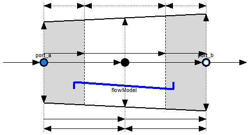
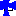

| Name | Description |
|---|---|
| Base class for straight pipe models | |
| Base class for distributed flow models | |
| Flow models for pipes, including wall friction, static head and momentum flow | |
| Heat transfer for flow models | |
| Functions to compute characteristic numbers | |
| Different variants for pressure drops due to pipe wall friction |

Base class for one dimensional flow models. It specializes a PartialTwoPort with a parameter interface and icon graphics.
Extends from Modelica.Fluid.Interfaces.PartialTwoPort (Partial component with two ports).
| Type | Name | Default | Description |
|---|---|---|---|
| replaceable package Medium | PartialMedium | Medium in the component | |
| Geometry | |||
| Real | nParallel | 1 | Number of identical parallel pipes |
| Length | length | Length [m] | |
| Boolean | isCircular | true | = true if cross sectional area is circular |
| Diameter | diameter | Diameter of circular pipe [m] | |
| Area | crossArea | Modelica.Constants.pi*diamet... | Inner cross section area [m2] |
| Length | perimeter | Modelica.Constants.pi*diameter | Inner perimeter [m] |
| Height | roughness | 2.5e-5 | Average height of surface asperities (default: smooth steel pipe) [m] |
| Static head | |||
| Length | height_ab | 0 | Height(port_b) - Height(port_a) [m] |
| Assumptions | |||
| Boolean | allowFlowReversal | system.allowFlowReversal | = true to allow flow reversal, false restricts to design direction (port_a -> port_b) |
| Type | Name | Description |
|---|---|---|
| FluidPort_a | port_a | Fluid connector a (positive design flow direction is from port_a to port_b) |
| FluidPort_b | port_b | Fluid connector b (positive design flow direction is from port_a to port_b) |
partial model PartialStraightPipe
"Base class for straight pipe models"
extends Modelica.Fluid.Interfaces.PartialTwoPort;
// Geometry
// Note: define nParallel as Real to support inverse calculations
parameter Real nParallel(min=1)=1 "Number of identical parallel pipes";
parameter SI.Length length "Length";
parameter Boolean isCircular=true
"= true if cross sectional area is circular";
parameter SI.Diameter diameter "Diameter of circular pipe";
parameter SI.Area crossArea=Modelica.Constants.pi*diameter*diameter/4
"Inner cross section area";
parameter SI.Length perimeter=Modelica.Constants.pi*diameter
"Inner perimeter";
parameter SI.Height roughness=2.5e-5
"Average height of surface asperities (default: smooth steel pipe)";
final parameter SI.Volume V=crossArea*length*nParallel "volume size";
// Static head
parameter SI.Length height_ab=0 "Height(port_b) - Height(port_a)";
// Pressure loss
replaceable model FlowModel =
Modelica.Fluid.Pipes.BaseClasses.FlowModels.DetailedPipeFlow
constrainedby
Modelica.Fluid.Pipes.BaseClasses.FlowModels.PartialStaggeredFlowModel
"Wall friction, gravity, momentum flow";
equation
assert(length >= height_ab, "Parameter length must be greater or equal height_ab.");
end PartialStraightPipe;
 Modelica.Fluid.Pipes.BaseClasses.PartialTwoPortFlow
Modelica.Fluid.Pipes.BaseClasses.PartialTwoPortFlow
Base class for distributed flow models. The total volume is split into nNodes segments along the flow path. The default value is nNodes=2.
Mass and Energy balances
The mass and energy balances are inherited from Interfaces.PartialDistributedVolume. One total mass and one energy balance is formed across each segment according to the finite volume approach. Substance mass balances are added if the medium contains more than one component.An extending model needs to define the geometry and the difference in heights between the flow segments (static head). Moreover it needs to define two vectors of source terms for the distributed energy balance:
Qb_flows[nNodes], the heat flow source terms, e.g., conductive heat flows across segment boundaries, andWb_flows[nNodes], the work source terms.Momentum balance
The momentum balance is determined by theFlowModel component, which can be replaced with any model extended from
BaseClasses.FlowModels.PartialStaggeredFlowModel.
The default setting is DetailedPipeFlow.
This considers
flowModel.use_Ib_flows is true.
Model Structure
The momentum balances are formulated across the segment boundaries along the flow path according to the staggered grid approach. The configurablemodelStructure determines the formulation of the boundary conditions at port_a and port_b.
The options include (default: av_vb):
av_vb: Symmetric setting with nNodes-1 momentum balances between nNodes flow segments.
The ports port_a and port_b expose the first and the last thermodynamic state, respectively.
Connecting two or more flow devices therefore may result in high-index DAEs for the pressures of connected flow segments.
a_v_b: Alternative symmetric setting with nNodes+1 momentum balances across nNodes flow segments.
Half momentum balances are placed between port_a and the first flow segment as well as between the last flow segment and port_b.
Connecting two or more flow devices therefore results in algebraic pressures at the ports.
The specification of good start values for the port pressures is essential for the solution of large nonlinear equation systems.av_b: Unsymmetric setting with nNodes momentum balances, one between nth volume and port_b, potential pressure state at port_aa_vb: Unsymmetric setting with nNodes momentum balance, one between first volume and port_a, potential pressure state at port_bpipe1.port_b.p = pipe2.port_a.p
This is only true if the flow velocity remains the same on each side of the connection. Consider using a fitting for any significant change in diameter or fluid density, if the resulting effects, such as change in kinetic energy, cannot be neglected. This also allows for taking into account friction losses with respect to the actual geometry of the connection point.
Extends from Modelica.Fluid.Interfaces.PartialTwoPort (Partial component with two ports), Modelica.Fluid.Interfaces.PartialDistributedVolume (Base class for distributed volume models).
| Type | Name | Default | Description |
|---|---|---|---|
| replaceable package Medium | PartialMedium | Medium in the component | |
| Integer | n | nNodes | Number of discrete volumes |
| Volume | fluidVolumes[n] | {crossAreas[i]*lengths[i] fo... | Discretized volume, determine in inheriting class [m3] |
| Geometry | |||
| Real | nParallel | 1 | Number of identical parallel flow devices |
| Length | lengths[n] | lengths of flow segments [m] | |
| Area | crossAreas[n] | cross flow areas of flow segments [m2] | |
| Length | dimensions[n] | hydraulic diameters of flow segments [m] | |
| Height | roughnesses[n] | Average heights of surface asperities [m] | |
| Static head | |||
| Length | dheights[n] | zeros(n) | Differences in heigths of flow segments [m] |
| Assumptions | |||
| Boolean | allowFlowReversal | system.allowFlowReversal | = true to allow flow reversal, false restricts to design direction (port_a -> port_b) |
| Dynamics | |||
| Dynamics | energyDynamics | system.energyDynamics | Formulation of energy balances |
| Dynamics | massDynamics | system.massDynamics | Formulation of mass balances |
| Dynamics | momentumDynamics | system.momentumDynamics | Formulation of momentum balances |
| Initialization | |||
| AbsolutePressure | p_a_start | system.p_start | Start value of pressure at port a [Pa] |
| AbsolutePressure | p_b_start | p_a_start | Start value of pressure at port b [Pa] |
| Boolean | use_T_start | true | Use T_start if true, otherwise h_start |
| Temperature | T_start | if use_T_start then system.T... | Start value of temperature [K] |
| SpecificEnthalpy | h_start | if use_T_start then Medium.s... | Start value of specific enthalpy [J/kg] |
| MassFraction | X_start[Medium.nX] | Medium.X_default | Start value of mass fractions m_i/m [kg/kg] |
| ExtraProperty | C_start[Medium.nC] | fill(0, Medium.nC) | Start value of trace substances |
| MassFlowRate | m_flow_start | system.m_flow_start | Start value for mass flow rate [kg/s] |
| Advanced | |||
| Integer | nNodes | 2 | Number of discrete flow volumes |
| ModelStructure | modelStructure | Types.ModelStructure.av_vb | Determines whether flow or volume models are present at the ports |
| Boolean | useLumpedPressure | false | =true to lump pressure states together |
| Boolean | useInnerPortProperties | false | =true to take port properties for flow models from internal control volumes |
| Type | Name | Description |
|---|---|---|
| FluidPort_a | port_a | Fluid connector a (positive design flow direction is from port_a to port_b) |
| FluidPort_b | port_b | Fluid connector b (positive design flow direction is from port_a to port_b) |
partial model PartialTwoPortFlow
"Base class for distributed flow models"
import Modelica.Fluid.Types.ModelStructure;
// extending PartialTwoPort
extends Modelica.Fluid.Interfaces.PartialTwoPort(
final port_a_exposesState = (modelStructure == ModelStructure.av_b) or (modelStructure == ModelStructure.av_vb),
final port_b_exposesState = (modelStructure == ModelStructure.a_vb) or (modelStructure == ModelStructure.av_vb));
// distributed volume model
extends Modelica.Fluid.Interfaces.PartialDistributedVolume(
final n = nNodes,
final fluidVolumes = {crossAreas[i]*lengths[i] for i in 1:n}*nParallel);
// Geometry parameters
parameter Real nParallel(min=1)=1 "Number of identical parallel flow devices";
parameter SI.Length[n] lengths "lengths of flow segments";
parameter SI.Area[n] crossAreas "cross flow areas of flow segments";
parameter SI.Length[n] dimensions "hydraulic diameters of flow segments";
parameter SI.Height[n] roughnesses "Average heights of surface asperities";
// Static head
parameter SI.Length[n] dheights=zeros(n)
"Differences in heigths of flow segments";
// Assumptions
parameter Types.Dynamics momentumDynamics=system.momentumDynamics
"Formulation of momentum balances";
// Initialization
parameter Medium.MassFlowRate m_flow_start = system.m_flow_start
"Start value for mass flow rate";
// Discretization
parameter Integer nNodes(min=1)=2 "Number of discrete flow volumes";
parameter Types.ModelStructure modelStructure=Types.ModelStructure.av_vb
"Determines whether flow or volume models are present at the ports";
parameter Boolean useLumpedPressure=false
"=true to lump pressure states together";
final parameter Integer nFM=if useLumpedPressure then nFMLumped else nFMDistributed
"number of flow models in flowModel";
final parameter Integer nFMDistributed=if modelStructure==Types.ModelStructure.a_v_b then n+1 else if (modelStructure==Types.ModelStructure.a_vb or modelStructure==Types.ModelStructure.av_b) then n else n-1;
final parameter Integer nFMLumped=if modelStructure==Types.ModelStructure.a_v_b then 2 else 1;
final parameter Integer iLumped=integer(n/2)+1
"Index of control volume with representative state if useLumpedPressure";
// Advanced model options
parameter Boolean useInnerPortProperties=false
"=true to take port properties for flow models from internal control volumes";
Medium.ThermodynamicState state_a "state defined by volume outside port_a";
Medium.ThermodynamicState state_b "state defined by volume outside port_b";
Medium.ThermodynamicState[nFM+1] statesFM "state vector for flowModel model";
// Pressure loss model
replaceable model FlowModel =
Modelica.Fluid.Pipes.BaseClasses.FlowModels.DetailedPipeFlow
constrainedby
Modelica.Fluid.Pipes.BaseClasses.FlowModels.PartialStaggeredFlowModel
"Wall friction, gravity, momentum flow";
FlowModel flowModel(
redeclare final package Medium = Medium,
final n=nFM+1,
final states=statesFM,
final vs=vsFM,
final momentumDynamics=momentumDynamics,
final allowFlowReversal=allowFlowReversal,
final p_a_start=p_a_start,
final p_b_start=p_b_start,
final m_flow_start=m_flow_start,
final nParallel=nParallel,
final pathLengths=pathLengths,
final crossAreas=crossAreasFM,
final dimensions=dimensionsFM,
final roughnesses=roughnessesFM,
final dheights=dheightsFM,
final g=system.g) "Flow model";
// Flow quantities
Medium.MassFlowRate[n+1] m_flows(
each min=if allowFlowReversal then -Modelica.Constants.inf else 0,
each start=m_flow_start)
"Mass flow rates of fluid across segment boundaries";
Medium.MassFlowRate[n+1, Medium.nXi] mXi_flows
"Independent mass flow rates across segment boundaries";
Medium.MassFlowRate[n+1, Medium.nC] mC_flows
"Trace substance mass flow rates across segment boundaries";
Medium.EnthalpyFlowRate[n+1] H_flows
"Enthalpy flow rates of fluid across segment boundaries";
SI.Velocity[n] vs = {0.5*(m_flows[i] + m_flows[i+1])/mediums[i].d/crossAreas[i] for i in 1:n}/nParallel
"mean velocities in flow segments";
// Model structure dependent flow geometry
protected
SI.Length[nFM] pathLengths "Lengths along flow path";
SI.Length[nFM] dheightsFM "Differences in heights between flow segments";
SI.Area[nFM+1] crossAreasFM "Cross flow areas of flow segments";
SI.Velocity[nFM+1] vsFM "Mean velocities in flow segments";
SI.Length[nFM+1] dimensionsFM "Hydraulic diameters of flow segments";
SI.Height[nFM+1] roughnessesFM "Average heights of surface asperities";
equation
assert(nNodes > 1 or modelStructure <> ModelStructure.av_vb,
"nNodes needs to be at least 2 for modelStructure av_vb, as flow model disappears otherwise!");
// staggered grid discretization of geometry for flowModel, depending on modelStructure
if useLumpedPressure then
if modelStructure <> ModelStructure.a_v_b then
pathLengths[1] = sum(lengths);
dheightsFM[1] = sum(dheights);
if n == 1 then
crossAreasFM[1:2] = {crossAreas[1], crossAreas[1]};
dimensionsFM[1:2] = {dimensions[1], dimensions[1]};
roughnessesFM[1:2] = {roughnesses[1], roughnesses[1]};
else // n > 1
crossAreasFM[1:2] = {sum(crossAreas[1:iLumped-1])/(iLumped-1), sum(crossAreas[iLumped:n])/(n-iLumped+1)};
dimensionsFM[1:2] = {sum(dimensions[1:iLumped-1])/(iLumped-1), sum(dimensions[iLumped:n])/(n-iLumped+1)};
roughnessesFM[1:2] = {sum(roughnesses[1:iLumped-1])/(iLumped-1), sum(roughnesses[iLumped:n])/(n-iLumped+1)};
end if;
else
if n == 1 then
pathLengths[1:2] = {lengths[1]/2, lengths[1]/2};
dheightsFM[1:2] = {dheights[1]/2, dheights[1]/2};
crossAreasFM[1:3] = {crossAreas[1], crossAreas[1], crossAreas[1]};
dimensionsFM[1:3] = {dimensions[1], dimensions[1], dimensions[1]};
roughnessesFM[1:3] = {roughnesses[1], roughnesses[1], roughnesses[1]};
else // n > 1
pathLengths[1:2] = {sum(lengths[1:iLumped-1]), sum(lengths[iLumped:n])};
dheightsFM[1:2] = {sum(dheights[1:iLumped-1]), sum(dheights[iLumped:n])};
crossAreasFM[1:3] = {sum(crossAreas[1:iLumped-1])/(iLumped-1), sum(crossAreas)/n, sum(crossAreas[iLumped:n])/(n-iLumped+1)};
dimensionsFM[1:3] = {sum(dimensions[1:iLumped-1])/(iLumped-1), sum(dimensions)/n, sum(dimensions[iLumped:n])/(n-iLumped+1)};
roughnessesFM[1:3] = {sum(roughnesses[1:iLumped-1])/(iLumped-1), sum(roughnesses)/n, sum(roughnesses[iLumped:n])/(n-iLumped+1)};
end if;
end if;
else
if modelStructure == ModelStructure.av_vb then
//nFM = n-1;
if n == 2 then
pathLengths[1] = lengths[1] + lengths[2];
dheightsFM[1] = dheights[1] + dheights[2];
else
pathLengths[1:n-1] = cat(1, {lengths[1] + 0.5*lengths[2]}, 0.5*(lengths[2:n-2] + lengths[3:n-1]), {0.5*lengths[n-1] + lengths[n]});
dheightsFM[1:n-1] = cat(1, {dheights[1] + 0.5*dheights[2]}, 0.5*(dheights[2:n-2] + dheights[3:n-1]), {0.5*dheights[n-1] + dheights[n]});
end if;
crossAreasFM[1:n] = crossAreas;
dimensionsFM[1:n] = dimensions;
roughnessesFM[1:n] = roughnesses;
elseif modelStructure == ModelStructure.av_b then
//nFM = n
pathLengths[1:n] = lengths;
dheightsFM[1:n] = dheights;
crossAreasFM[1:n+1] = cat(1, crossAreas[1:n], {crossAreas[n]});
dimensionsFM[1:n+1] = cat(1, dimensions[1:n], {dimensions[n]});
roughnessesFM[1:n+1] = cat(1, roughnesses[1:n], {roughnesses[n]});
elseif modelStructure == ModelStructure.a_vb then
//nFM = n
pathLengths[1:n] = lengths;
dheightsFM[1:n] = dheights;
crossAreasFM[1:n+1] = cat(1, {crossAreas[1]}, crossAreas[1:n]);
dimensionsFM[1:n+1] = cat(1, {dimensions[1]}, dimensions[1:n]);
roughnessesFM[1:n+1] = cat(1, {roughnesses[1]}, roughnesses[1:n]);
elseif modelStructure == ModelStructure.a_v_b then
//nFM = n+1;
pathLengths[1:n+1] = cat(1, {0.5*lengths[1]}, 0.5*(lengths[1:n-1] + lengths[2:n]), {0.5*lengths[n]});
dheightsFM[1:n+1] = cat(1, {0.5*dheights[1]}, 0.5*(dheights[1:n-1] + dheights[2:n]), {0.5*dheights[n]});
crossAreasFM[1:n+2] = cat(1, {crossAreas[1]}, crossAreas[1:n], {crossAreas[n]});
dimensionsFM[1:n+2] = cat(1, {dimensions[1]}, dimensions[1:n], {dimensions[n]});
roughnessesFM[1:n+2] = cat(1, {roughnesses[1]}, roughnesses[1:n], {roughnesses[n]});
else
assert(true, "Unknown model structure");
end if;
end if;
// Source/sink terms for mass and energy balances
for i in 1:n loop
mb_flows[i] = m_flows[i] - m_flows[i + 1];
mbXi_flows[i, :] = mXi_flows[i, :] - mXi_flows[i + 1, :];
mbC_flows[i, :] = mC_flows[i, :] - mC_flows[i + 1, :];
Hb_flows[i] = H_flows[i] - H_flows[i + 1];
end for;
// Distributed flow quantities, upwind discretization
for i in 2:n loop
H_flows[i] = semiLinear(m_flows[i], mediums[i - 1].h, mediums[i].h);
mXi_flows[i, :] = semiLinear(m_flows[i], mediums[i - 1].Xi, mediums[i].Xi);
mC_flows[i, :] = semiLinear(m_flows[i], Cs[i - 1, :], Cs[i, :]);
end for;
H_flows[1] = semiLinear(port_a.m_flow, inStream(port_a.h_outflow), mediums[1].h);
H_flows[n + 1] = -semiLinear(port_b.m_flow, inStream(port_b.h_outflow), mediums[n].h);
mXi_flows[1, :] = semiLinear(port_a.m_flow, inStream(port_a.Xi_outflow), mediums[1].Xi);
mXi_flows[n + 1, :] = -semiLinear(port_b.m_flow, inStream(port_b.Xi_outflow), mediums[n].Xi);
mC_flows[1, :] = semiLinear(port_a.m_flow, inStream(port_a.C_outflow), Cs[1, :]);
mC_flows[n + 1, :] = -semiLinear(port_b.m_flow, inStream(port_b.C_outflow), Cs[n, :]);
// Boundary conditions
port_a.m_flow = m_flows[1];
port_b.m_flow = -m_flows[n + 1];
port_a.h_outflow = mediums[1].h;
port_b.h_outflow = mediums[n].h;
port_a.Xi_outflow = mediums[1].Xi;
port_b.Xi_outflow = mediums[n].Xi;
port_a.C_outflow = Cs[1, :];
port_b.C_outflow = Cs[n, :];
// The two equations below are not correct if C is stored in volumes.
// C should be treated the same way as Xi.
//port_a.C_outflow = inStream(port_b.C_outflow);
//port_b.C_outflow = inStream(port_a.C_outflow);
if useInnerPortProperties and n > 0 then
state_a = Medium.setState_phX(port_a.p, mediums[1].h, mediums[1].Xi);
state_b = Medium.setState_phX(port_b.p, mediums[n].h, mediums[n].Xi);
else
state_a = Medium.setState_phX(port_a.p, inStream(port_a.h_outflow), inStream(port_a.Xi_outflow));
state_b = Medium.setState_phX(port_b.p, inStream(port_b.h_outflow), inStream(port_b.Xi_outflow));
end if;
// staggered grid discretization for flowModel, depending on modelStructure
if useLumpedPressure then
if modelStructure <> ModelStructure.av_vb then
// all pressures are equal
fill(mediums[1].p, n-1) = mediums[2:n].p;
elseif n > 2 then
// need two pressures
fill(mediums[1].p, iLumped-2) = mediums[2:iLumped-1].p;
fill(mediums[n].p, n-iLumped) = mediums[iLumped:n-1].p;
end if;
if modelStructure == ModelStructure.av_vb then
port_a.p = mediums[1].p;
statesFM[1] = mediums[1].state;
m_flows[iLumped] = flowModel.m_flows[1];
statesFM[2] = mediums[n].state;
port_b.p = mediums[n].p;
elseif modelStructure == ModelStructure.av_b then
port_a.p = mediums[1].p;
statesFM[1] = mediums[iLumped].state;
statesFM[2] = state_b;
m_flows[n+1] = flowModel.m_flows[1];
elseif modelStructure == ModelStructure.a_vb then
m_flows[1] = flowModel.m_flows[1];
statesFM[1] = state_a;
statesFM[2] = mediums[iLumped].state;
port_b.p = mediums[n].p;
elseif modelStructure == ModelStructure.a_v_b then
m_flows[1] = flowModel.m_flows[1];
statesFM[1] = state_a;
statesFM[2] = mediums[iLumped].state;
statesFM[3] = state_b;
m_flows[n+1] = flowModel.m_flows[2];
else
assert(true, "Unknown model structure");
end if;
if modelStructure <> ModelStructure.a_v_b then
vsFM[1] = vs[1:iLumped-1]*lengths[1:iLumped-1]/sum(lengths[1:iLumped-1]);
vsFM[2] = vs[iLumped:n]*lengths[iLumped:n]/sum(lengths[iLumped:n]);
else
vsFM[1] = vs[1:iLumped-1]*lengths[1:iLumped-1]/sum(lengths[1:iLumped-1]);
vsFM[2] = vs[2:n-1]*lengths[2:n-1]/sum(lengths[2:n-1]);
vsFM[3] = vs[iLumped:n]*lengths[iLumped:n]/sum(lengths[iLumped:n]);
end if;
else
if modelStructure == ModelStructure.av_vb then
//nFM = n-1
statesFM[1:n] = mediums[1:n].state;
m_flows[2:n] = flowModel.m_flows[1:n-1];
vsFM[1:n] = vs;
port_a.p = mediums[1].p;
port_b.p = mediums[n].p;
elseif modelStructure == ModelStructure.av_b then
//nFM = n
statesFM[1:n] = mediums[1:n].state;
statesFM[n+1] = state_b;
m_flows[2:n+1] = flowModel.m_flows[1:n];
vsFM[1:n] = vs;
vsFM[n+1] = m_flows[n+1]/Medium.density(state_b)/crossAreas[n]/nParallel;
port_a.p = mediums[1].p;
elseif modelStructure == ModelStructure.a_vb then
//nFM = n
statesFM[1] = state_a;
statesFM[2:n+1] = mediums[1:n].state;
m_flows[1:n] = flowModel.m_flows[1:n];
vsFM[1] = m_flows[1]/Medium.density(state_a)/crossAreas[1]/nParallel;
vsFM[2:n+1] = vs;
port_b.p = mediums[n].p;
elseif modelStructure == ModelStructure.a_v_b then
//nFM = n+1
statesFM[1] = state_a;
statesFM[2:n+1] = mediums[1:n].state;
statesFM[n+2] = state_b;
m_flows[1:n+1] = flowModel.m_flows[1:n+1];
vsFM[1] = m_flows[1]/Medium.density(state_a)/crossAreas[1]/nParallel;
vsFM[2:n+1] = vs;
vsFM[n+2] = m_flows[n+1]/Medium.density(state_b)/crossAreas[n]/nParallel;
else
assert(true, "Unknown model structure");
end if;
end if;
end PartialTwoPortFlow;

| Type | Name | Default | Description |
|---|---|---|---|
| AbsolutePressure | dp_nominal | 1e3*dp_small | Nominal pressure loss (for nominal models) [Pa] |
| MassFlowRate | m_flow_nominal | 1e2*m_flow_small | Mass flow rate for dp_nominal (for nominal models) [kg/s] |
| Boolean | from_dp | momentumDynamics >= Types.Dy... | = true, use m_flow = f(dp), otherwise dp = f(m_flow) |
| AbsolutePressure | dp_small | system.dp_small | Within regularization if |dp| < dp_small (may be wider for large discontinuities in static head) [Pa] |
| MassFlowRate | m_flow_small | system.m_flow_small | Within regularization if |m_flows| < m_flow_small (may be wider for large discontinuities in static head) [kg/s] |
| Advanced | |||
| Boolean | useUpstreamScheme | true | = false to average upstream and downstream properties across flow segments |
| Boolean | use_Ib_flows | momentumDynamics <> Types.Dy... | = true to consider differences in flow of momentum through boundaries |
| Diagnostics | |||
| Boolean | show_Res | false | = true, if Reynolds numbers are included for plotting |
| Internal Interface | |||
| replaceable package Medium | PartialMedium | Medium in the component | |
| Integer | n | 2 | Number of discrete flow volumes |
| Geometry | |||
| Real | nParallel | number of identical parallel flow devices | |
| Static head | |||
| Acceleration | g | system.g | Constant gravity acceleration [m/s2] |
| Assumptions | |||
| Boolean | allowFlowReversal | system.allowFlowReversal | = true to allow flow reversal, false restricts to design direction (states[1] -> states[n+1]) |
| Dynamics | momentumDynamics | system.momentumDynamics | Formulation of momentum balance |
| Initialization | |||
| MassFlowRate | m_flow_start | system.m_flow_start | Start value of mass flow rates [kg/s] |
| AbsolutePressure | p_a_start | Start value for p[1] at design inflow [Pa] | |
| AbsolutePressure | p_b_start | Start value for p[n+1] at design outflow [Pa] | |
replaceable model FlowModel = Modelica.Fluid.Pipes.BaseClasses.FlowModels.DetailedPipeFlow constrainedby Modelica.Fluid.Pipes.BaseClasses.FlowModels.PartialStaggeredFlowModel "Wall friction, gravity, momentum flow";
| Type | Name | Default | Description |
|---|---|---|---|
| AbsolutePressure | dp_nominal | 1e3*dp_small | Nominal pressure loss (for nominal models) [Pa] |
| MassFlowRate | m_flow_nominal | 1e2*m_flow_small | Mass flow rate for dp_nominal (for nominal models) [kg/s] |
| Boolean | from_dp | momentumDynamics >= Types.Dy... | = true, use m_flow = f(dp), otherwise dp = f(m_flow) |
| AbsolutePressure | dp_small | system.dp_small | Within regularization if |dp| < dp_small (may be wider for large discontinuities in static head) [Pa] |
| MassFlowRate | m_flow_small | system.m_flow_small | Within regularization if |m_flows| < m_flow_small (may be wider for large discontinuities in static head) [kg/s] |
| Advanced | |||
| Boolean | useUpstreamScheme | true | = false to average upstream and downstream properties across flow segments |
| Boolean | use_Ib_flows | momentumDynamics <> Types.Dy... | = true to consider differences in flow of momentum through boundaries |
| Diagnostics | |||
| Boolean | show_Res | false | = true, if Reynolds numbers are included for plotting |
| Internal Interface | |||
| replaceable package Medium | PartialMedium | Medium in the component | |
| Integer | n | 2 | Number of discrete flow volumes |
| Geometry | |||
| Real | nParallel | number of identical parallel flow devices | |
| Static head | |||
| Acceleration | g | system.g | Constant gravity acceleration [m/s2] |
| Assumptions | |||
| Boolean | allowFlowReversal | system.allowFlowReversal | = true to allow flow reversal, false restricts to design direction (states[1] -> states[n+1]) |
| Dynamics | momentumDynamics | system.momentumDynamics | Formulation of momentum balance |
| Initialization | |||
| MassFlowRate | m_flow_start | system.m_flow_start | Start value of mass flow rates [kg/s] |
| AbsolutePressure | p_a_start | Start value for p[1] at design inflow [Pa] | |
| AbsolutePressure | p_b_start | Start value for p[n+1] at design outflow [Pa] | |
replaceable model FlowModel = Modelica.Fluid.Pipes.BaseClasses.FlowModels.DetailedPipeFlow constrainedby Modelica.Fluid.Pipes.BaseClasses.FlowModels.PartialStaggeredFlowModel "Wall friction, gravity, momentum flow";